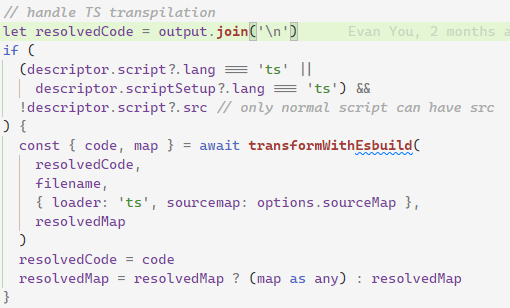

vite 兼容性踩坑记录
vite 提供的快速启动开发模式服务器的特性非常好用，不过，有时候线上出了兼容性问题，你还无法快速定位到问题的根源，那就需要低版本的浏览器来进行开发测试，然而……
想要在低版本浏览器上运行项目，首先要在浏览器上打开项目，因为我们项目采用了可选链，导致连项目都打不开。
尝试配置 config.esbuild.target 为 es2015，ts 文件是可以被正确编译了，但是 vue 文件仍然不行，然后我去搜索，发现了好多人都有这个问题，但是貌似没有一个能给出很方便的解决方案的。在 GitHub 上有个 issue 给出了 PR，但是这个 PR 没有被合并（issue：https://github.com/vitejs/vite/issues/5222，pr：https://github.com/vitejs/vite/pull/5652）。
根据上面的 pr 我们可以看到 plugin-vue 的源代码，发现 vue 中的 ts 是不检查 config.esbuild.target 选项的，如下图：

所以我首先尝试的方法就是按照 PR 所述直接修改 node_modules 里的文件，改完之后发现 vue 中的可选链被编译了，但是 ts 中的可选链仍然没有被编译，这个时候再搭配一下 config.esbuild.target 就能把两边问题都给解决了，不过这个方法要修改 node_modules 不太好。
后来换了 @rollup/plugin-babel 插件，配置完也不行，研究了下源代码，对于 ts 项目，需要配置 extensions 才行：
export const DEFAULT_EXTENSIONS: ['.js', '.jsx', '.es6', '.es', '.mjs'];
const unpackOptions = ({
extensions = babel.DEFAULT_EXTENSIONS,
// rollup uses sourcemap, babel uses sourceMaps
// just normalize them here so people don't have to worry about it
sourcemap = true,
sourcemaps = true,
sourceMap = true,
sourceMaps = true,
...rest
} = {}) => {
return {
extensions,
plugins: [],
sourceMaps: sourcemap && sourcemaps && sourceMap && sourceMaps,
...rest,
caller: {
name: '@rollup/plugin-babel',
...rest.caller
}
};
};
配置如下：
import { resolve } from 'path'
import { defineConfig } from 'vite'
import vue from '@vitejs/plugin-vue'
import babel from '@rollup/plugin-babel'
export default defineConfig({
plugins: [
vue(),
babel({
extensions: ['.ts', '.js', '.jsx', '.es6', '.es', '.mjs'],
plugins: [
'@babel/plugin-proposal-optional-chaining',
'@babel/plugin-proposal-nullish-coalescing-operator'
]
})
]
})
一眼看过去发现应该还是不行，因为缺少 .vue 文件的处理，试了一下果然不行，不过，扩展名里加 .vue 的话会报错，一般来说 .vue 文件编译之后会是 js，但是 .vue 里面如果包含了样式，会单独提取出来作为一个虚拟的文件，通过查询参数 type=style 来读取，这里以 babel 来转译样式文件当然报错。
看了下 @rollup/plugin-babel 的代码，发现还有 include/exclude/filter 选项可以使用，与扩展名之间是且的关系：
const userDefinedFilter =
typeof customFilter === 'function' ? customFilter : createFilter(include, exclude);
filter = (id) => extensionRegExp.test(stripQuery(id).bareId) && userDefinedFilter(id);
所以，我们只要限定一下，只转义以 .vue 为后缀的文件就行了：
import { resolve } from 'path'
import { defineConfig } from 'vite'
import vue from '@vitejs/plugin-vue'
import babel from '@rollup/plugin-babel'
export default defineConfig({
plugins: [
vue(),
babel({
include: [
/\.vue$/,
/\.ts$/
],
extensions: ['.vue', '.ts', '.js'],
plugins: [
'@babel/plugin-proposal-optional-chaining',
'@babel/plugin-proposal-nullish-coalescing-operator'
]
})
]
})
最后结果如下：

为了解决 chrome 的滚动条 bug（另外再吐槽下，最近 chrome 频繁升级导致的 bug 真的是不少），先得把 vite 不支持 chrome 老版本的问题解决……